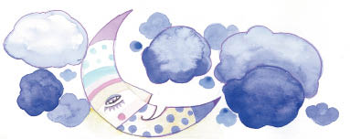
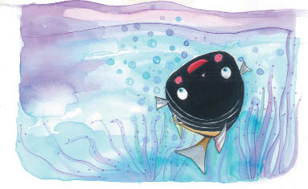
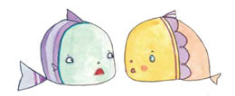
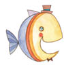
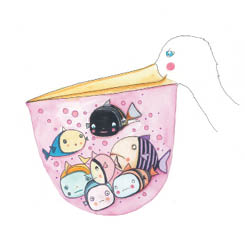
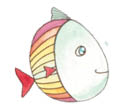
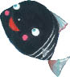

Gece yarısı olduğunda, Küçük Kara Balık uyanmış, ırmağın yüzeyinden yansıyan ay ışığının bütün çevresini aydınlattığını görmüş. Aydede’yi seviyormuş. Evindeyken, onunla konuşmak istediği geceleri anımsamış; ay ışığı evlerini aydınlatırken yosunların altından süzülerek çıkıp Aydede’yle konuşmak istermiş, ama annesi onu hep geri çeker, yeniden uyumasını söylermiş. Bundan böyle özgürmüş Küçük Kara Balık; taşın altından kayarak çıkmış,
“Merhaba, sevimli Aydede,” demiş.
“Merhaba Küçük Kara Balık,” diye selamlamış onu Aydede. “Burada ne yapıyorsun?”
“Dünyanın çevresinde yolculuk ediyorum,” demiş Küçük Kara Balık.
“Dünya çok büyük,” demiş Aydede, “Her yere gidemezsin ki.”
“Haklısın,” demiş Küçük Kara Balık. “Ama gidebildiğim kadar giderim.”
“Keşke sabaha kadar senin yanında kalabilseydim,” diyerek içini çekmiş Aydede. “Ama kocaman bir bulut yaklaşıyor, benim ışığımı kapatır o.”
“Ah, güzel Aydedem,” demiş Küçük Kara Balık, “ışığını o kadar çok seviyorum ki. Keşke sonsuza kadar beni aydınlatabilsen.”
Aydede yanıtlamış onu:

“Sevgili Küçük Kara Balık, ne yazık ki benim kendi ışığım yok. Ben ışığımı güneşten alıyorum. Yalnızca güneşin benim üzerimdeki ışığını yansıtabilirim sana...”
O sırada kocaman bir kara bulut gelip ayın yüzünü örtmüş, Küçük Kara Balık da Aydede’nin sesini duymaz olmuş. Karanlığın içinde yeniden yapayalnız kalınca korkmuş, ama çok geçmeden kendini toparlamış, taşının altına girip uyumaya hazırlanmış.
Ertesi sabah uyandığında yalnız olmadığını görmüş. Bir gün önce karşılaştığı minik balıklardan birkaçı taşın yanında durmuş, kendi aralarında fısıldaşıyorlarmış. Onun uyandığını görünce hep bir ağızdan,
“Günaydın, Küçük Kara Balık!” diye bağırmışlar.
“Günaydın. Görüyorum ki sonunda benim peşimden gelmeye karar vermişsiniz.”
“Evet,” demiş minik balıklardan biri. “Ama yine de korkuyoruz.”

“Pelikanları düşündükçe huzursuz oluyoruz,” demiş bir başkası.
“Siz biraz fazla düşünüyorsunuz,” demiş Küçük Kara Balık. “Durmadan düşünmenin yararı yok. İlerlemek istiyorsak harekete geçmeliyiz.”
Ama, harekete geçtikleri anda çevrelerinin sarıldığını hissetmişler. Her taraf birdenbire kapkaranlık oluvermiş. Minik balıklar, bir pelikanın torbalı gagasına düşmüş olduklarını hemencecik anlayıvermişler. Küçük Kara Balık elinden geldiğince sakin olmaya çalışarak minik balıklara dönmüş,
“Arkadaşlar, bir pelikanın eline düştük,” demiş. Ama korkmayın, bir kaçış yolu var.”
Hepsi birden bağırıp ağlaşmaya başlamışlar. Bir tanesi içini çeke çeke,
“Hepsi senin yüzünden Küçük Kara Balık,” demiş. “Bir pelikandan kaçamayacağımızı biliyorduk biz.”
Bir başkası da eklemiş:
“Bizi yutacak, böylece hepimizin sonu gelecek.”
Tam o sırada ürkütücü bir kahkaha yankılanmış suyun içinde. Pelikanmış gülen. Sonra da şöyle söylediği duyulmuş:
“Ne de güzel yakaladım bunları. Gerçekten de acıyorum sizlere; hepinizi birden yutmak istemiyorum!”
Minik balıklar kurtulmak için yalvarmaya başlamışlar:
“Ah efendim,” demişler pelikana, “sizin hakkınızda öyle hoş şeyler duyduk ki. Lütfen, efendim, lütfen bize bir iyilik yapın, ağzınızı açın da gidelim!”

Pelikan şu yanıtı vermiş:
“Sizi şimdi yutmak istemiyorum. Şu anda midem tıpkı sizin gibi lezzetli balıklarla tıka basa dolu zaten!”
Bunu söyler söylemez de başını öyle bir sallamış ki bütün balıkçıklar torbalı gaganın dibine inivermişler.
“Efendim, biz hiçbir suç işlemedik ki,” diye yalvarmışlar minik balıklar, “biz masumuz. Bizi yanıltan şu Küçük Kara Balık oldu...”

“Sizi gidi korkaklar,” diye onların sözünü kesmiş Küçük Kara Balık. “Bu acınası bahanelerinizi duyduktan sonra bu akıllı kuşun sizi özgür bırakacağını mı sanıyorsunuz?”
“Sen hiçbir şeyin fakında değilsin,” demişler minik balıklar, “biraz sonra bizi özgür bırakacak, seni de yutacak!”
“Evet,” diye gürlemiş pelikan, “sizi özgür bırakacağım, ama bir tek koşulla!”

“Koşul ne olursa olsun, kabul ediyoruz!” diye bağrışmışlar minik balıklar.
“Özgürlüğünüze kavuşmak istiyorsanız, şu kendini beğenmiş Küçük Kara Balık’ı öldürmeniz gerekiyor!” demiş pelikan.
Bunu duyan Küçük Kara Balık hemencecik,
“Ona inanmayın,” diye atılmış, “bu iğrenç kuşun istediği tek şey, bizi birbirimize düşürmek. Dinleyin, bir planım var.”
Ama minik balıklar öylesine korkmuşlar, kurtulmayı öylesine istiyorlarmış ki, Küçük Kara Balık’ın üstüne atlayıvermişler. Küçük Kara Balık ise onlarla alay ederek gülmüş ve,
“Sizi gidi korkaklar!” demiş. “Beni nasıl öldüreceksiniz? O kadar güçlü değilsiniz ki! Hem buradan kaçabileceğinizi filan da sanmayın.”

“Seni öldürmeliyiz!” diye hep bir ağızdan bağırmışlar minik balıklar. “Özgürlüğümüze kavuşmak istiyoruz!”
“Siz aklınızı kaçırmış olmalısınız,” demiş Küçük Kara Balık. “Beni öldürseniz bile pelikan sizi yine de özgür bırakmayacaktır. Sakın ona kanmayın!”
“Kendi canını kurtarmak için böyle söylüyorsun. Zaten senin bizi düşündüğün filan yok,” diye yanıtlamışlar onu. Bir yandan da var güçleriyle saldırmaya devam ediyorlarmış.
Küçük Kara Balık şöyle bir silkelenip onları üstünden atarken,
“Dinleyin beni!” demiş ciddi bir sesle. “Şimdi size ne yapacağımızı göstereceğim. Şurada yatan yarı ölü balıkların yanına gideceğim,” bunu derken torbalı gaganın dibindeki balıkları gösteriyormuş, “ve ölü taklidi yapacağım. Bakın bakalım o zaman pelikan sizi özgür bırakacak mı. Bu dediğimi yapmazsanız, yanımdaki kamayla hepinizi öldürürüm ve torbayı kesip özgürlüğüme kavuşurum.”
Minik balıklardan biri, Küçük Kara Balık’ın yanına koşup,
“Sus artık,” demiş, “bunları duymak istemiyorum!”
“Alın şu korkağı buradan,” demiş Küçük Kara Balık ve kamasını çekip balıklara doğru tehdit edercesine sallamış. Bunu gören minik balıklar korkmuşlar, Küçük Kara Balık’ı rahat bırakmışlar. Bunun üzerine Küçük Kara Balık yavaşça sırtüstü dönmüş, torbanın dibindeki öteki balıkların yanına doğru inmiş. Küçük Kara Balık yavaşça torbalı gaganın dibine inerken, ona saldıran minik balıklar yukarı doğru yüzüp pelikana seslenmişler: